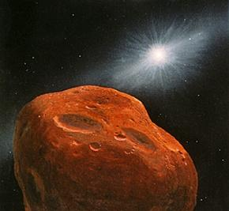

Quatrains Indicating Comet-Strike
If a major event like a Comet striking the earth is supposed to happen, where are the references of this momentous event in the writings of Nostradamus? In his quatrain I.69 Nostradamus described this event without mentioning the word 'Comet' directly. Elsewhere, he used the word 'Comet' or 'Bearded Star' but avoided any direct reference to the comet striking the earth. But there are many quatrains spread all over his book, which describe the after-effects or side effects of the comet-strike, e.g. huge and sudden floods, earthquakes, "fire from the sky", falling of "red hail" etc. Many of these quatrains are usually interpreted as describing the use of nuclear weapons, but a closer scrutiny would reveal that these quatrains are referring to something more than a nuclear war. The summary of my conclusions arrived from analyzing various prophecies, including those of Nostradamus are somewhat like this:
The comet will appear suddenly during the World War III, changing the course of the war. At that time, an attempt would be going on to forge a peace treaty between the islamic coalition and the western coalition. But after the comet strikes, the Europe will be in ruins and the USA severely crippled, easterners will seize the opportunity to attack and conquer all of the Europe.
It will come to view for only one to two weeks before it crashes on earth. Scientists will not be able to detect its approach beforehand. There will be very little to do except to try to escape. Casualties will be in millions.
The Comet will break into several pieces due to the gravitational pull of the Earth. The biggest piece will fall on the ocean causing huge tidal waves. Some big pieces will fall on the land in southern Europe, releasing huge amounts of dust into the atmosphere and dimming the sunlight. It will also cause tectonic and volcanic activities in Europe and elsewhere. Although Nostradamus speaks about Europe only, it is a forgone conclusion that the damage will not be limited to Europe only. Due to the earth's rotating motion, pieces will fall all over the earth, including the USA. Somehow, the Arab countries seem to escape the destruction. Most of the damage, as described by Nostradamus, are concentrated within the northern hemisphere and within 40 to 50 degrees latitude.
For several days, smaller burning pieces, broken off from the Comet will plunge through the atmosphere in a continuous stream causing huge fires in various cities and forests, thereby destroying them. This is the 'fire from the sky". Waters in rivers and sea will be polluted as a result.
The comet will be red in color. This is the
cause of "Red hail" covering the earth. I was surprised as to how a Comet can
be red in color. However, a search of the internet revealed that there is a
class of Comets called the "Centaurs" which

The astonishing redness of the Kuiper-class objects and
The composition of Centaur 5145 Pholus (.pdf file - 493 KB).
There are entire websites devoted to the theme of comets hitting the earth. But most notable is a website by Barry Warmkessel at http://www.barry.warmkessel.com which, among other things, feature a comprehensive paper on the probable places on the earth where the pieces of the comet will fall, based on the various prophecies, including those of Nostradamus. This site is highly recommended for readers who wants to explore the issue of the impending comet-strike further.
The quatrains of Nostradamus which indicate the Comet-strike and its after-effects are given below:
Very near Auch, Lectoure and Mirande great fire will fall
from the sky for three nights: the cause will appear both stupefying and
marvelous: very soon after, the earth will tremble. -
I.46
This quatrain describes the hail of burning meteorites
from the broken up comet falling on towns in South-Western France. This is
before the big chunks hit the earth. The cause is indeed "stupefying and
marvelous" for never before in recorded history has such a thing happened in the
world. The trembling of the earth occurs soon afterwards, when the big pieces of
the comet strike the earth and the sea.
The great mountain, seven stadia round, after peace, war, famine, flooding. It will spread far, drowning great countries, even antiquities and their great foundations - I.69
Here is the actual description of the Comet and its size before breaking up. The tidal waves created by the strike of the comet in the sea will spread far, flooding many countries. It is also indicated that war will take place just after the disaster.
The Moon obscured in deep gloom, her brother passes with rusty color: The great one hidden for a long time under the shadows will hold the blade in the bloody wound. - I.84
As a result of the dust that will rise in the atmosphere after large pieces of the comet strike the land, the moon will be obscured and the rays of the sun will diminish, giving it a dull red color. The eastern forces, on the receiving end when the WW-III started, will strike back immediately, seizing this God-given opportunity and taking advantage of the destruction of the western forces and their countries after the comet-strike disaster.
Because of the solar heat on the sea of Negrepont the fishes half cooked: The inhabitants will eat them, when there is a lack of food in Rhodes and Genoa.- II.3
After the comet strike, food will be scarce in Italy. Burning comet fragments will fall into the sea around Negrepont, killing all aquatic life. People will be forced to eat the dead fish, half-cooked in the boiling water by the immense heat generated by the burning comet fragments.
Shortly before the monarch is assassinated, Castor and Pollux in the ship, bearded star: The public treasure emptied by land and sea, Pisa, Asti, Terrara, Turin are forbidden lands - II.15
Around the time of the appearance of the comet, a notable leader, probably from Italy, will be assassinated. Castor & Pollux in the ship indicates that there will be twins in the Papacy i.e. there will be two rival Popes as indicated in many other prophecies. After the comet-strike, the tidal waves will destroy many Italian cities. Whatever is left will be taken away by the invading eastern forces.
New, impetuous and sudden rain will suddenly halt two armies. Celestial stone, fires make the sea stony, the death of seven by land and sea sudden - II.18
The celestial stone, i.e. the comet and its burning pieces will rain all over the sea and land. This sudden disaster will temporarily halt the World War due to deaths of leaders due to the catastrophe.
The aimless army of Europe will depart, collecting itself near the submerged isle: The D'Arton fleet will bend the phalanx, at the navel of the world a greater voice substituted.-II.22
The submerged island is Great Britain, which is submerged as a result of the tidal waves generated by the comet-strike. This reference is also found in other quatrains. The remains of the "aimless" army, probably the NATO forces (D'Arton may be an anagram of NATO) will gather around the submerged Great Britain after suffering great losses as a result of the comet disaster and will probably depart for the USA. The navel of the world - Rome, will be taken over by the eastern forces. But this might also refer to the anti-pope who will remain there after the Pope flees.
The great star will burn for seven days and the cloud will make the sun appear double. The large mastiff will howl all night when the great pontiff changes his abode - II.41
In all likelihood "the great star" burning for seven days is the Comet which will be seen in the sky for seven days before is strikes the Earth. The duration is close to the "six days" mentioned in Mother Shipton's prophecies. The comet has to be very close to the Earth to be visible in the daylight as another "sun". Imagine what a fearsome Red Comet with a long tail rushing towards Earth will appear like ! This is a moment of absolute terror for the humanity. The Pope is airlifted to safety, probably to the USA, after scientists work out that the major impact points will be around Europe. "The large mastiff will howl all night" - probably indicates the continuous sound of the siren that will sound in Rome and probably in all cities of Europe when emergency evacuation measures are taken to move people away from southern Europe.
During the appearance of the bearded star, the three great princes will be made enemies: Struck from the sky, peace earth quaking, Po, Tiber overflowing, serpent placed upon the shore. -II.43
When the Comet ("bearded star"- the star with beard) appears, the war will go on. This quatrain too links the appearance of the comet with the war. Then it will strike the earth from the sky. The water from the tidal waves will even travel inland and the rivers will overflow as a result and earthquakes will occur. The "serpent placed upon the shore" is the Antichrist, who will later seize the opportunity and land in the shores of Europe and conquer it.
After great misery for mankind an even greater approaches when the great cycle of the centuries is renewed. It will rain blood, milk, famine, war and disease. In the sky will be seen a fire, dragging a trail of sparks - II.46
As if the WW-III is not a misery enough for the mankind, a Comet "fire dragging a trail of sparks" approaches from the sky to wreck destruction by hitting the earth. The red rain is resulted by the red dust of the comet which will rise in the atmosphere. Widespread famine will spread because of dying crops as a result of reduced sunlight and disease is the natural effect after such a disaster. This event takes place at the early part of the millennium when the "great cycle of the centuries is renewed". Pretty gloomy picture indeed !
Mabus then will soon die, there will come of people and beasts a horrible rout: Then suddenly one will see vengeance, hundred, hand, thirst, hunger when the comet will run. - II.62
The famous quatrain which generated endless speculations about who this Mabus is. After "Mabus" - probably an Islamic leader dies, the Comet will arrive and strike the earth. Eastern forces will seize the opportunity provided by the chaos to take the revenge for the death of "Mabus" and attack Europe as is also indicated elsewhere. In the Europe, ravaged by the comet-strike, thirst, hunger and death will prevail.
The dart from the sky will make its journey, deaths while speaking: great execution. The stone in the tree, the proud nation brought down, noise, rumor of a human monster, purge and expiation.
The "dart from the sky" is the comet. When its coming, some kind of talks (speaking) to stop the WW-III will be going on. "The stone in the tree" probably means that parts of the comet will strike forests. I have a hunch that the "proud nation" means the USA. if so, this means that USA will be brought down economically as well as militarily as a result of the comet disaster. This perhaps explains why the eastern forces will manage to invade and conquer Europe. The rumor of a human monster refers to the rumor among the Islamic forces that the Anti-Christ or "al-Dajjal" has appeared amongst them. This has been mentioned in the Islamic prophecies - The Prophet (S) said, "You will fight the Romans, and Believers from the Hijaz will fight them after you, until Allah enables them to conquer Constantinople (Istanbul, Turkey) and Rome with Tasbih and Takirr (saying "Subhdn Allah" and "Allahu Akbar"). Its fortifications will collapse, and they will obtain booty the like of which has never been seen, so that they will share it out by scooping it up with their shields. Then someone will cry, 'O Muslims! the Dajjal is in your country, with your families', and the people will leave the wealth. Anyone who takes notice will regret it and anyone who ignores it will regret it. They will ask, 'Who shouted?' but they will not know who he is. They will say, 'Send a vanguard to Ilya'. If the Dajjal has appeared, you will hear about his deeds.' So they will go and see, and if they see that everything is normal, they will say, 'No-one would give a shout like that for no reason, so let us go together to Ilya'.' If we find the Dajjal there we will fight him together, until Allah decides between us and him. If we do not find the Dajjal, we will go back to our country and our families.' "
Through fire from the sky the city almost burned: The floods threatens Deucalion again: Sardinia vexed by the African fleet, after Libra will leave Leo - II.81
"Deucalion" is the Greek equivalent of Noah and survived the great flood by building a boat when the god Zeus, because of the wicked ways of the human race, destroyed them by flood. The "fire from sky" in association of floods indicate that the Comet strike will result in the flood (of similar proportions as during Noah's time) due to Tsunami waves. Some of the burning fragments may strike cities. Soon after, Arab forces will start attacking Europe.
At sunrise one will see a great fire, noise and light extending towards Aquilon: Within the globe death and one will hear cries, through steel, fire, famine, death awaiting them.- II.91
A description of the comet approaching to strike the earth at the northern hemisphere with "great fire, noise and light" during sunrise. This disaster, coupled with the WW-III, will leave a large population of the earth dead or dying.
Fire color of gold from the sky seen on earth: struck by the high born one, a marvelous happening: Great slaughter for humanity: the nephew of the great one taken, deaths of spectators, the proud one escaped - II.92
The "high born one" probably refers to God. Nostradamus believes that divine action is behind the comet-strike. There will be a large number of deaths. A nephew of a notable person will die in the disaster. A piece will also fall on the spectators gathering to watch the splendor of comet-pieces falling to earth, leading to their death. A notable leader - the "proud one" will escape such a fate.
Burning torch will be seen in the sky at night near the end and beginning of the Rhone: Famine, steel: the relief provided late, Persia turns to invade Macedonia - II.96
The "burning torch" is probably parts of the broken up comet approaching the ground. War and famine will lead to deaths. Shortly afterwards, the Islamic forces from Iran will invade Macedonia.
The Great Britain comprising England will come to be flooded very high by waters. The new League of Ausonia will make war, So that they will come to strive against them. - III.70
After a large comet fragment strikes the sea, probably Atlantic Ocean, huge tidal waves will flood many parts of Great Britain. When the eastern forces attack Italy later, a coalition of the western forces, including Britain will try to resist them.
To swallow the burning sun in the throat, the Tuscan land sprinkled with human blood, the leader leads his son away, the pail of water, a captive lady led into Turkish lands - IV.58
Burning pieces of the comet will strike Italy, killing many people. A leader escapes but a lady, probably a politician or leader will be captured by the invading forces and taken away as prisoner of war to Turkey.
The year that Saturn and Mars are equal fiery, The air very dry, parched, long meteor: Through secret fires a great place blazing from burning heat, Little rain, warm wind, wars, incursions. - IV.67
The "long meteor" is the comet. Heat from the burning fragments will parch the lands. As a result, the weather will change as warm and dry winds diminish any chance of rain. The war and attack by the enemy will resume soon after.
Fire will fall from the sky on to the royal building when the light of war is weakened. For seven months a great war, people dead through evil, Rouen and Evreux will not fail the king - IV.100
The burning comet will strike the earth just when some sort of peace treaty was being negotiated to end the World War III and there was a lull in the fight. But after the comet strikes, the Islamic alliance, seizing the opportunity, will attack Europe with full force and the resulting war will go on for seven months killing many people.
Where all is good, all well abundant, in Sun and Moon its ruin approaches. It comes from heaven as you boast of your fortune, in the same state as the seventh rock - V.32
I think in this quatrain Nostradamus speaks of the USA. But as they boast of their abundance and good fortune, the Comet comes from the heaven to ruin the country and its economy and leave it in a desolated state as the seventh rock of apocalypse.
Too long a stay for the English chief at Nîmes, Towards Spain Redbeard to the rescue: Many will die by war opened that day, When a bearded star will fall in Artois. - V.59
A piece of the comet will fall in Artois when the war is already going on. The British will be fighting in France and Spain.
At the 48th degree of the climacteric, the end of Cancer there is a very drought. Fish in the sea, river and the lake boiled hectic, Bearn & Bigorre in distress from fire in the sky - V.98
Burning Comet fragments will fall in France around the 48th degree parallel. "Fire in the sky" from burning comet fragments will fall on cities of France and on the sea, rivers and lakes, killing aquatic life.
The incendiary trapped in his own fire; fire from the sky at Carcassonne and the Comminges: Foix, Auch, Mazères, the high old man escaped, Through those of Hesse and Thuringia, and some Saxons. - V.100
Yet another reference of the "fire from the sky" falling on various cities of South Western France. This description seems to be recurring in various quatrains - indication of its widespread nature. The event is also correlated with the ongoing war.
At forty and five degrees the sky will burn, Fire to approach the great new city: In an instant a great scattered flame will leap up, When one will want to demand proof of the Normans. - VI.97
This may indicate that USA will not escape the death and destruction of Europe either, due to the comet-strike. New York city is situated at 40.5 degrees. When a burning fragment of the comet strikes the city, a huge flame will leap up. The issue regarding France is not clear at this time.
Condom and Auch and around Mirande, I see fire from the sky which encompasses them. Sun and Mars conjoined in Leo, then at Marmande, lightning, great hail, a wall falls into the Garonne. - VIII.2
French cities are engulfed by "Fire from the sky" and "great hail" and lightning. Nostradamus probably tells here of the fragments of the comet which falls on the land. The description is similar to the "hail and fire" mentioned in the Biblical Revelations. An astrological conjunction has been provided in the quatrain, which, however occurs quite frequently and does not help us derive the precise time of this event. In the next few years Sun and Mars will be in Leo during the following periods - 10th August 2004 to 16th September 2004 ; 10th August 2006 to 26th August 2006 ; 7th September 2015 to 17th September 2015 ; 18th August 2017 to 16th September 2017, Aug-Sep 2019 etc.
A great stench will come from Lausanne, but they will not know its origin, they will put out all people from distant places, fire seen in the sky, a foreign nation defeated. - VIII.9
The stench from Lausanne might be a result of some chemical or biological weapon released during the war by the eastern forces. The "fire in the sky" describes the comet-strike as usual. The foreign nation - the Islamic alliance will be defeated later.
At the place where HIERON has his ship built, there will be such a great sudden flood, that one will not have a place nor land to fall upon, the waves rise to the Olympic Fesulan. - VIII.16
Hieron or Hiero-II was the ruler of Syracuse (in the Italian island of Sicily) around 270 BC. He had a great ship named "Syracusia" built in Syracuse. It appears that a sudden flood of huge proportions will engulf Sicily. The water would reach upto Faesulae (Fiesole in Italy), which is 970 feet (almost 300 metres) above sea level in the Valdarno Fiorentino Hills. If sea water can reach such a height suddenly, such that there will not be any "land to fall upon", then this must be caused by a huge tidal wave or Tsunami resulting from the Comet striking the Mediterranean Ocean.
The antichrist
very soon annihilates the three, twenty-seven years his war will last. The
unbelievers are dead, captive, exiled; with blood, human bodies, water and red
hail covering the earth.-VIII.77
This quatrain associates the war of the Antichrist / World
War III with the comet-strike. "Red hail" are the un-burnt pieces of the Red
Comet which will cover the earth. Water results from the tidal waves arising out
of the comet striking the sea & oceans. Huge number of deaths will result from
the war as well as from the comet strikes.
The trembling of the earth at Mortara. The tin island of St. George half sunk; Drowsy with peace, war will arise, At Easter in the temple abysses opened. - XIII.31
The tin island of St. George is Great Britain, which will be half sunk due to the huge tidal waves generated by the comet strike. The other half - the "island" of Scotland (Highlands) will only remain above the water. Just before the comet strike, a peace treaty would be attempted to be negotiated. But the comet strike would change all that. Taking advantage of the situation, the eastern forces will attack and conquer Europe. The trembling at Mortara is probably associated with a comet piece hitting the land there. Earthquakes will result all over Europe. The timing is probably near Easter i.e. in April.
Sun twentieth of Taurus the earth will tremble very mightily, It will ruin the great theater filled: To darken and trouble air, sky and land, Then the infidel will call upon God and saints.-IX.83
While this is commonly taken as a quatrain describing a great earthquake, the darkness in sky and land indicate that it is more likely to be a description of the comet-strike scenario. The darkness is due to the rising dust in the atmosphere, blocking the sunlight and reducing visibility. The timing here too is around April - May. The reference to the infidel indicates the war of the Antichrist that will resume soon after with much vigor.
A very mighty trembling in the month of May, Saturn in Capricorn, Jupiter and Mercury in Taurus: Venus also, Cancer, Mars in Virgo, Hail will fall larger than an egg. - X.67
Another description of the great trembling of the earth around May, probably the comet strike. The hail of size larger than egg indicates the falling of large comet pieces.
The year of the great seventh number accomplished, it will appear at the time of the games of slaughter, not far from the age of the great millennium, when the dead will come out of their graves - X.74
As for the timing of the WW-III (the games of slaughter) and the comet strike, it will be after the "Year of the great Seventh number", which is seven, "not far from the great millennium" i.e. the year 2007. By "it will appear", Nostradamus probably means the appearance or striking of the earth by a comet which he indicated in other quatrains and is also mentioned in the Bible, bringing widespread devastation to the world already at war. Thus, a comet will strike the earth when the Third World War is going on.
From the above quatrains it can be said that although Nostradamus does not mention in explicit terms like various other prophecies, that a comet will hit the earth when the WW-III will be going on, he describes the various phenomena that is consistent with such a comet strike. He also associates these happenings with the ongoing war and his descriptions of the event are in consonance with the description of the events given in various other prophecies.
Scientists have been worrying about an asteroid or comet hitting the earth ever since it became apparent that such an event may have decimated the dinosaurs millions of years ago. After the recent incident when the comet Shoemaker-Levy 9 hit Jupiter after breaking up into several pieces, there has been increasing nervousness about the possibility. But humans are ill-prepared to counter such an eventuality. In many cases, comets and asteroids have been detected on their path away from the earth after they have already missed the earth narrowly. In this case, the red comet will be visible for only a few days before it hits the earth, when it is already trapped in the gravitational pull of the earth and is spiraling towards it. The comet also comes in the most inopportune moment, when a large number of countries are engaged in a most vicious war. It is doubtful whether anything could have been done even if no war was going on. But in this case, nothing could be done except to run away and hide. Millions, if not Billions will die as a result of the fire, tidal waves, floods, earthquakes, volcanoes, famine and the man made war all influenced by a single event - "The Comet-Strike".
Source: http://www.angelfire.com/psy/nostradamus/cometquatrains.htm